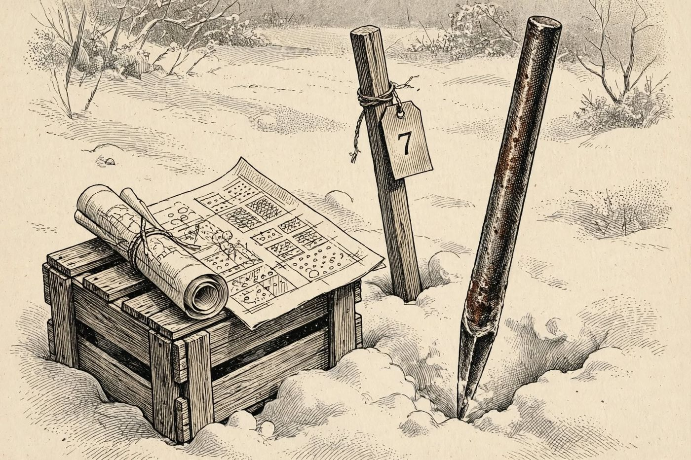

17 de diciembre
Bajo la nieve
Libro · págs. 72-75
Audio del día
Transcripción
«El Gran Bancal de la terraza sur es un manto blanco e impenetrable. Mila vio, la mañana del uno, un rincón removido, como si hubiera cavado un animal. Un zorro no entierra con tanto cuidado. Si el asesino necesitaba esconder lo que sobraba, tuvo que hacerlo en un sitio frío antes de que se estropeara. Con esta varilla de hierro sondeamos la nieve parcela a parcela. Donde la tierra esté blanda, cavaremos. Apunte bien cada coordenada.»

Intenta resolverlo primero. Abre solo lo que necesites, en este orden.
1Pista sutil
Las columnas A, C, E y G están completamente descartadas por las catas. Como las tres esferas están en una hilera recta de tres parcelas seguidas y solo hay parcelas blandas en las filas 3, 4 y 5, la hilera DEBE ser vertical en la columna D.
2Comprobación parcial
Las tres esferas con veneno ocupan las posiciones D3, D4 y D5.
3Pista fuerte
Las únicas filas con parcelas blandas son la 3, la 4 y la 5. Una hilera de tres solo cabe en vertical, ocupando justo esas tres filas, así que la cinta tiene que estar en la fila 4.
4Solución oficialSpoiler si no lo has intentado
Ubicación en el bancal:
Hilera de esferas (3 parcelas): D3, D4, D5
Cinta con la letra 'L' (1 parcela): B4
Para el desenlace de la historia, vuelve al libro: la sección de soluciones está al final.